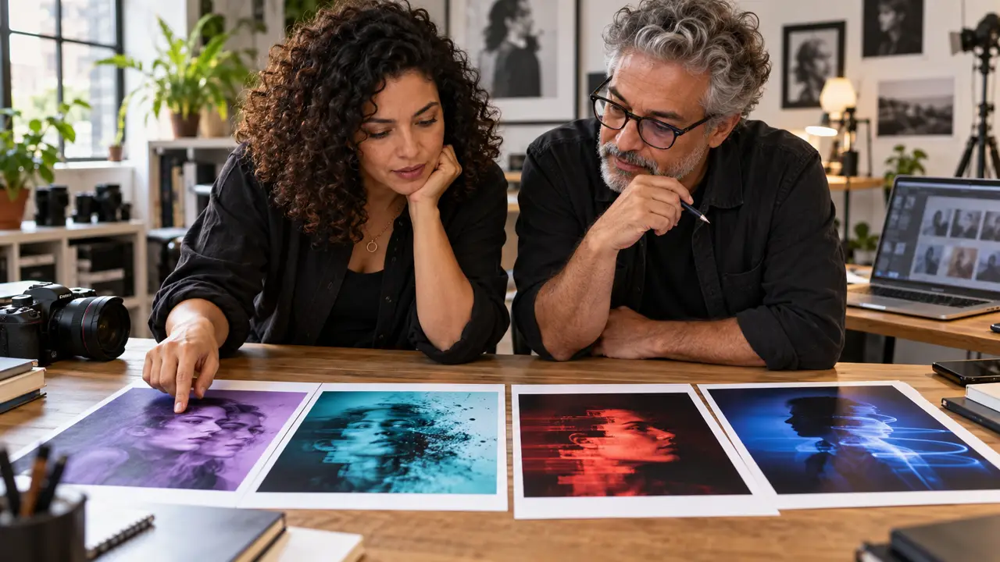

Motion Echo v6 · Retratos com IA
Um rosto nítido.
Quatro formas de movimento.
Prepare sua referência, crie quatro estilos e revise cada resultado. Violeta, ciano, escarlate e azul em aulas práticas, no seu ritmo.
começar agora →4 aulas de ~15 minutos · prática na ferramenta de imagens que você já usa · funciona no celular e no computador

O que você sai fazendo
Preparar a referênciaEscolher uma foto nítida e autorizada.
Criar quatro efeitosUsar pedidos claros e fazer uma mudança por tentativa.
Revisar com critérioConferir rosto, cor e direção do rastro.
Antes de começar
Tenha uma foto sua ou autorizada e acesso a uma ferramenta que aceite imagem de referência. O curso é aberto e gratuito. A ferramenta escolhida pode ter condições próprias de uso.
As ilustrações foram geradas com pessoas fictícias. Os exemplos não comprovam preservação de identidade. A espera pela geração pode passar do tempo previsto para a prática.
Para quem é
É para você se
- Fotografa pessoas ou trabalha com redes sociais e quer criar retratos editoriais.
- Tem pouco tempo e nenhuma base técnica.
- Prefere aprender fazendo.
Não é para você se
- Já domina o assunto e busca algo técnico.
- Quer videoaula tradicional.